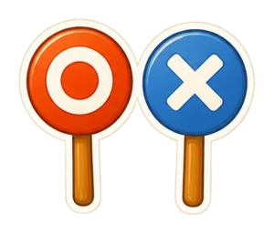
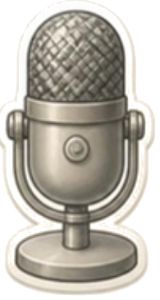

🔐 3번 방 · 생활 속 불편함 해결하기10차시 / 10~14도입

물건 교과서 · 방 탈출 미션
3번 방 · 10차시
발명은 어디서
시작될까?
“불편해!” 한마디가 발명의 시작이에요.
지난 미션 돌아보기
2번 방을 탈출했어요!
물건 사용법을 순서대로 정리하면
누구나 쉽게 따라 할 수 있어요.
누구나 쉽게 따라 할 수 있어요.
🕵️ 숙제 확인! 집에서 정말 편리한 물건을 떠올렸나요?
“그 물건이 없으면 무엇이 불편할까요?”
“그 물건이 없으면 무엇이 불편할까요?”

🚨 싹쓸이 마법사의 불평 쪽지!

MISSION BRIEFING
오늘의 미션 세 가지
미션 1
전과 후 비교
무엇이 불편했을까?
미션 2

불편함 OX 퀴즈
몸으로 O·X를 만들어요
미션 3

발명가 인터뷰
기자와 발명가가 되어요
보상
열쇠 조각 1
3번 방 첫 조각!
🎯 학습 목표 발명품이 생기기 전과 후를 비교하여, 어떤 불편함을 해결했는지 말할 수 있어요.
MISSION 1
🔍 전과 후 비교
1
왼쪽 ‘전’ 물건을 보고, 쓸 때 무엇이 불편했을지 짝과 이야기해요. (30초)
2
오른쪽 ‘후’ 물건은 무엇일까요? 손을 들고 맞혀요.
3
“○○이 불편해서 △△이 생겼어요.” 문장으로 말해요.
NEXT MISSION
11차시 예고
불편함 수사대
내 물건에 숨은 불편함 단서를 찾아요.
🕵️ 필통·가방·책상이 불편했던 순간을 떠올려 오세요.
✏️ 내 필통
🎒 내 책가방